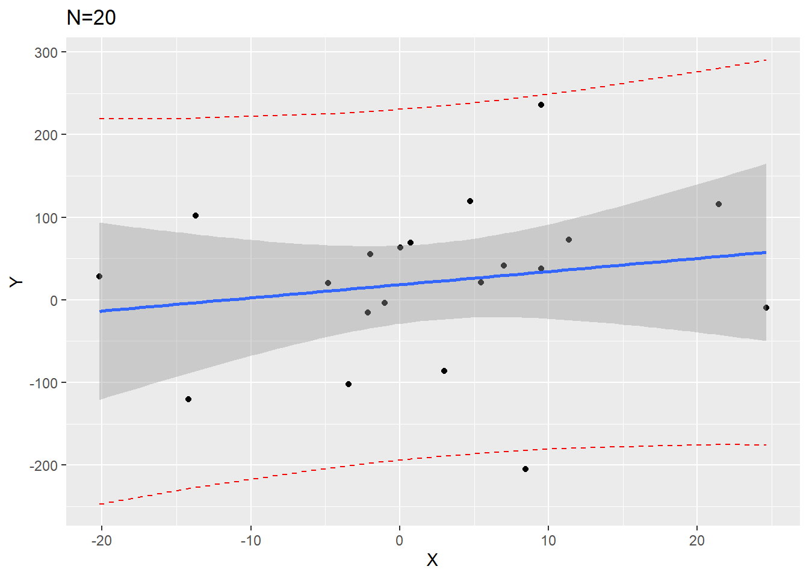
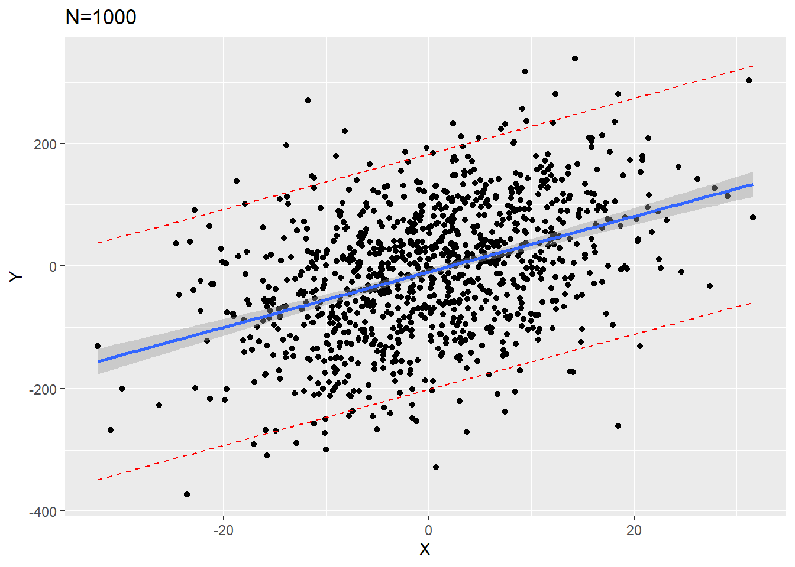
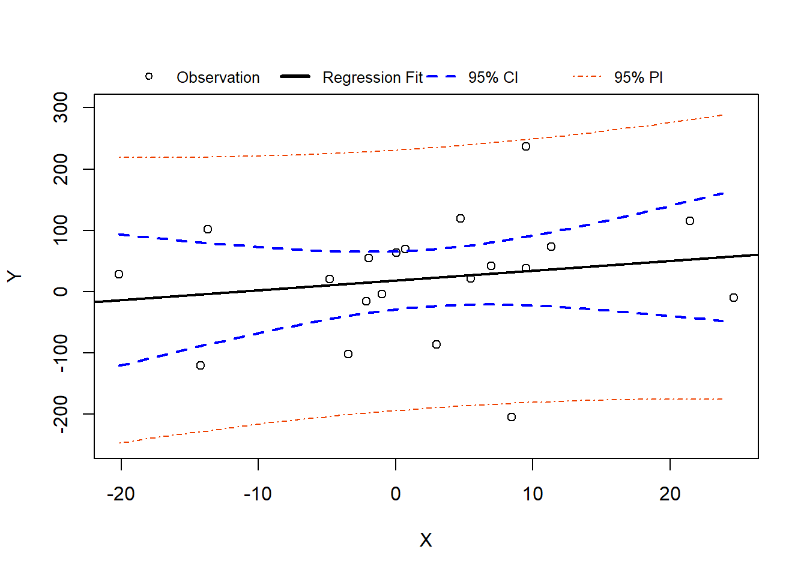

This page is part of the University of Colorado-Anschutz Medical Campus’ BIOS 6618 Recitation collection. To view other questions, you can view the BIOS 6618 Recitation collection page or use the search bar to look for keywords.
Confidence vs. Prediction Intervals
Confidence intervals and prediction intervals are similar in that the attempt to provide a reasonable range based on your data for what we might expect for a future observation’s outcome. There are some major differences though:
Confidence intervals describe the variability in estimating a population parameter for an outcome of interest, like the mean outcome predicted from a regression model based on the included predictor(s): \(\hat{\mu}_{Y|X}\). It does not assume normality of the errors, but rather relies on the central limit theorem.
Prediction intervals describe the variability in the underlying population itself for an outcome of interest, like the predicted outcome for a single observation based on a given regression model: \(\hat{Y}|X\). It does assume normality of the errors in the model since we cannot rely on the central limit theorem for \(n=1\) (unless we are 100% confident in our assumption of normality for the regression model).
From the central limit theorem we know that as \(n\) increases, the standard error of our estimate also decreases since it is estimated as \(\frac{\sigma}{\sqrt{n}}\). This indicates that our confidence interval around the mean will become narrower as our sample size increases. However, the prediction interval will not become narrower as our sample size increases because it is predicting that single observation.
This can also be seen from our lecture slides where we denoted the standard errors to be:
The standard error for our single observation’s prediction adds the estimated mean square error (MSE) without any connection to our sample size, so it remains large even as the other terms get small as \(n\) increases.
We can visualize this if we simulate 1000 data points and fit a regression on the first 20 versus all 1000:
Code
library(ggplot2)set.seed(515)x <-rnorm(1000, mean=0, sd=10)error <-rnorm(1000,mean=0,sd=100)y <--3+5*x + error# create data frame of simulated data, subset to first 20 rows for small N exampledf <-data.frame(y=y, x=x)df20 <- df[1:20,]# fit small sample size with first 20 observationslm20 <-lm(y ~ x, data=df20)temp_pred <-predict(lm20, interval='predict')df20_pred <-cbind(df20, temp_pred)ggplot(df20_pred, aes(x=x, y=y))+geom_point()+geom_line(aes(y=lwr), color ="red", linetype ="dashed")+geom_line(aes(y=upr), color ="red", linetype ="dashed")+geom_smooth(method=lm, se=TRUE) +labs(x='X', y='Y') +ggtitle('N=20')

Code
# fit small sample size with first 20 observationslm1000 <-lm(y ~ x, data=df)temp_pred1 <-predict(lm1000, interval='predict')df1000_pred <-cbind(df, temp_pred1)ggplot(df1000_pred, aes(x=x, y=y))+geom_point()+geom_line(aes(y=lwr), color ="red", linetype ="dashed")+geom_line(aes(y=upr), color ="red", linetype ="dashed")+geom_smooth(method=lm, se=TRUE) +labs(x='X', y='Y') +ggtitle('N=1000')

From our plots we see that the confidence interval band (shaded gray) is much narrower around the \(N=1000\) plot. However, the red dashed prediction interval lines are similarly wide in both \(N=20\) and \(N=1000\) so that approximately 95% of all data points would fall between them for any value of \(X\).
Base R Plot Version of N=20 Plot
We can also create the figure using R’s built-in plotting functions:
Code
set.seed(515)x <-rnorm(1000, mean=0, sd=10)error <-rnorm(1000,mean=0,sd=100)y <--3+5*x + error# create data frame of simulated data, subset to first 20 rows for small N exampledf <-data.frame(y=y, x=x)df20 <- df[1:20,]# fit small sample size with first 20 observationslm20 <-lm(y ~ x, data=df20)temp_pred <-predict(lm20, interval='predict')df20_pred <-cbind(df20, temp_pred)plot(x=df20_pred$x, y=df20_pred$y, xlab='X', ylab='Y',ylim=c(-250,300)) # need to adjust y-axis limits based on CI/PIabline( lm20, lwd=2 ) # add linear regression line## calculate 95% CI and add to figure# first we can define a sequence of X values:# NOTE: By setting the grid we (1) can change the smoothness of our plotting intervals and (2) we ensure base R can plot the data since it is already in order from smallest to largest (otherwise R might jump around values of X instead of making a nice line)xgrid <-seq(min(df20_pred$x),max(df20_pred$x),by =1)# then we can use the predict function to get the 95% CI# note we define newdata as a data frame with the wtkg equal to xgridconf_interval <-predict(lm20, newdata=data.frame(x=xgrid), interval="confidence", level =0.95)# add the 95% CI linesmatlines(xgrid, conf_interval[,2:3], col ="blue", lty=2, lwd=2)## calculate 95% PI and add to figure# we can change interval type to predictionpred_interval <-predict(lm20, newdata=data.frame(x=xgrid), interval="predict", level =0.95)# add the 95% PI linesmatlines(xgrid, pred_interval[,2:3], col ="orangered2", lty=4)## Add legend for completenesslegend('top', horiz=T, inset=-0.1, xpd=T, pch=c(1,NA,NA,NA), lty=c(NA,1,2,4), lwd=c(NA,3,2,1), col=c('black','black','blue','orangered2'),legend=c('Observation','Regression Fit','95% CI','95% PI'),bty='n', cex=0.8)

Source Code
---title: "Confidence versus Prediction Intervals in Linear Regression"author: name: Alex Kaizer roles: "Instructor" affiliation: University of Colorado-Anschutz Medical Campustoc: truetoc_float: truetoc-location: leftformat: html: code-fold: show code-overflow: wrap code-tools: true---```{r, echo=F, message=F, warning=F}library(kableExtra)library(dplyr)```This page is part of the University of Colorado-Anschutz Medical Campus' [BIOS 6618 Recitation](/recitation/index.qmd) collection. To view other questions, you can view the [BIOS 6618 Recitation](/recitation/index.qmd) collection page or use the search bar to look for keywords.# Confidence vs. Prediction IntervalsConfidence intervals and prediction intervals are similar in that the attempt to provide a reasonable range based on your data for what we might expect for a future observation's outcome. There are some major differences though:* **Confidence intervals** describe the variability in estimating a population parameter for an outcome of interest, like the mean outcome predicted from a regression model based on the included predictor(s): $\hat{\mu}_{Y|X}$. It *does not* assume normality of the errors, but rather relies on the central limit theorem.* **Prediction intervals** describe the variability in the underlying population itself for an outcome of interest, like the predicted outcome for a single observation based on a given regression model: $\hat{Y}|X$. It *does* assume normality of the errors in the model since we cannot rely on the central limit theorem for $n=1$ (unless we are 100% confident in our assumption of normality for the regression model).From the central limit theorem we know that as $n$ increases, the standard error of our estimate also decreases since it is estimated as $\frac{\sigma}{\sqrt{n}}$. This indicates that our confidence interval around the mean will become narrower as our sample size increases. However, the prediction interval will not become narrower as our sample size increases because it is predicting that single observation.This can also be seen from our lecture slides where we denoted the standard errors to be:$\begin{aligned}SE(\hat{\mu}_{Y|X_0}) =& \sqrt{ {\color{blue}{\frac{\hat{\sigma}_{Y|X}^{2}}{n} + \frac{\hat{\sigma}_{Y|X}^{2}}{n-1} \left( \frac{(X_0 - \bar{X})^2}{\hat{\sigma}_{X}^{2}} \right)}}} \\SE(\hat{Y}|X_0) =& \sqrt{ {\color{green}{\hat{\sigma}_{Y|X}^{2}}} + {\color{blue}{\frac{\hat{\sigma}_{Y|X}^{2}}{n} + \frac{\hat{\sigma}_{Y|X}^{2}}{n-1} \left( \frac{(X_0 - \bar{X})^2}{\hat{\sigma}_{X}^{2}} \right)}}}\end{aligned}$The standard error for our single observation's prediction adds the estimated mean square error (MSE) without any connection to our sample size, so it remains large even as the other terms get small as $n$ increases.We can visualize this if we simulate 1000 data points and fit a regression on the first 20 versus all 1000:```{r, warning=F, message=F, class.source = 'fold-hide' }library(ggplot2)set.seed(515)x <-rnorm(1000, mean=0, sd=10)error <-rnorm(1000,mean=0,sd=100)y <--3+5*x + error# create data frame of simulated data, subset to first 20 rows for small N exampledf <-data.frame(y=y, x=x)df20 <- df[1:20,]# fit small sample size with first 20 observationslm20 <-lm(y ~ x, data=df20)temp_pred <-predict(lm20, interval='predict')df20_pred <-cbind(df20, temp_pred)ggplot(df20_pred, aes(x=x, y=y))+geom_point()+geom_line(aes(y=lwr), color ="red", linetype ="dashed")+geom_line(aes(y=upr), color ="red", linetype ="dashed")+geom_smooth(method=lm, se=TRUE) +labs(x='X', y='Y') +ggtitle('N=20')# fit small sample size with first 20 observationslm1000 <-lm(y ~ x, data=df)temp_pred1 <-predict(lm1000, interval='predict')df1000_pred <-cbind(df, temp_pred1)ggplot(df1000_pred, aes(x=x, y=y))+geom_point()+geom_line(aes(y=lwr), color ="red", linetype ="dashed")+geom_line(aes(y=upr), color ="red", linetype ="dashed")+geom_smooth(method=lm, se=TRUE) +labs(x='X', y='Y') +ggtitle('N=1000')```From our plots we see that the confidence interval band (shaded gray) is much narrower around the $N=1000$ plot. However, the red dashed prediction interval lines are similarly wide in both $N=20$ and $N=1000$ so that approximately 95% of all data points would fall between them for any value of $X$.## Base R Plot Version of N=20 PlotWe can also create the figure using R's built-in plotting functions:```{r, warning=F, message=F, class.source = 'fold-hide' }set.seed(515)x <-rnorm(1000, mean=0, sd=10)error <-rnorm(1000,mean=0,sd=100)y <--3+5*x + error# create data frame of simulated data, subset to first 20 rows for small N exampledf <-data.frame(y=y, x=x)df20 <- df[1:20,]# fit small sample size with first 20 observationslm20 <-lm(y ~ x, data=df20)temp_pred <-predict(lm20, interval='predict')df20_pred <-cbind(df20, temp_pred)plot(x=df20_pred$x, y=df20_pred$y, xlab='X', ylab='Y',ylim=c(-250,300)) # need to adjust y-axis limits based on CI/PIabline( lm20, lwd=2 ) # add linear regression line## calculate 95% CI and add to figure# first we can define a sequence of X values:# NOTE: By setting the grid we (1) can change the smoothness of our plotting intervals and (2) we ensure base R can plot the data since it is already in order from smallest to largest (otherwise R might jump around values of X instead of making a nice line)xgrid <-seq(min(df20_pred$x),max(df20_pred$x),by =1)# then we can use the predict function to get the 95% CI# note we define newdata as a data frame with the wtkg equal to xgridconf_interval <-predict(lm20, newdata=data.frame(x=xgrid), interval="confidence", level =0.95)# add the 95% CI linesmatlines(xgrid, conf_interval[,2:3], col ="blue", lty=2, lwd=2)## calculate 95% PI and add to figure# we can change interval type to predictionpred_interval <-predict(lm20, newdata=data.frame(x=xgrid), interval="predict", level =0.95)# add the 95% PI linesmatlines(xgrid, pred_interval[,2:3], col ="orangered2", lty=4)## Add legend for completenesslegend('top', horiz=T, inset=-0.1, xpd=T, pch=c(1,NA,NA,NA), lty=c(NA,1,2,4), lwd=c(NA,3,2,1), col=c('black','black','blue','orangered2'),legend=c('Observation','Regression Fit','95% CI','95% PI'),bty='n', cex=0.8)```